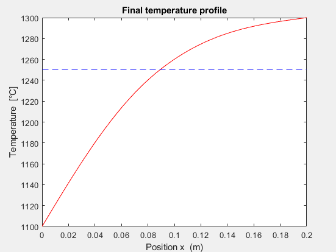
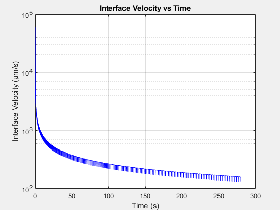
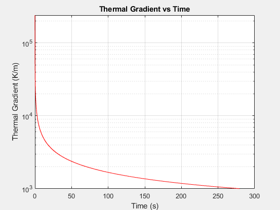

How the model works
- Heat conduction: an explicit forward-time, central-space (FTCS) scheme on a 500-node, 0.2 m domain, with a stability-limited time step. Each node switches between mould, solid and liquid properties as the temperature evolves.
- Interface tracking: the solid–liquid front is located by interpolating where the temperature crosses the melting point. The thermal gradient (G) is found by central differencing and the front velocity (V) by differencing over time, then the solver runs to a converged steady state.
- Solute diffusion: an upwind finite-difference solver for the concentration ahead of the front gives the solute boundary layer thickness (δc), which I checked against the analytical Kurz–Fisher estimate (2D/V).
- Stability criterion: the average δc (0.327 µm) sets the critical gradient Gn, giving the neutral stability line between planar and dendritic growth.
Results
Raising the hot-zone temperature steepened the thermal gradient and slowed the front, as theory predicts. On the process map, all 20 conditions fall below the neutral stability line, so this furnace set-up favours dendritic growth. The points with the steepest gradients and slowest fronts come closest to stability, which shows which way to push the process for a planar front.



What I'd take into my next project
- Check numerics against theory. Comparing the solute solver with the analytical 2D/V estimate gave confidence the code was right before trusting the process map.
- State the assumptions, then know their limits. The model ignores latent heat and the mushy zone, uses constant properties, and treats the alloy as binary. I'd add an enthalpy-based latent heat model and transient solute diffusion next.